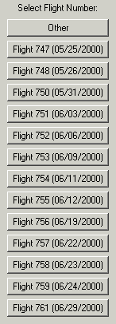
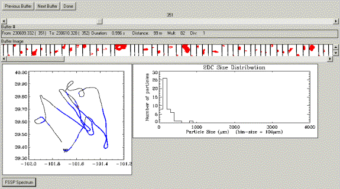
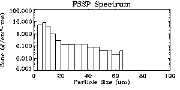

Description For Using T28DISPLAY program – Version 1.0
It is designed to display the 2DC data (buffer by buffer) for the STEPS 2000 project. After choosing this option the following window will open:
 Choose a flight number and a new window
opens!

The user can choose any buffer to
view. The buffer is displayed as a
sequence of particle image.
The T28 track shown on the lower
left corner, displays in blue color the T28 track while flying in the
cloud. The red square represents the
position on the track where the buffer displayed was collected. For each buffer displayed, a size
distribution graph is plotted in the main window.
If the “FSSP Spectrum”
option is chosen, it will display this window:
